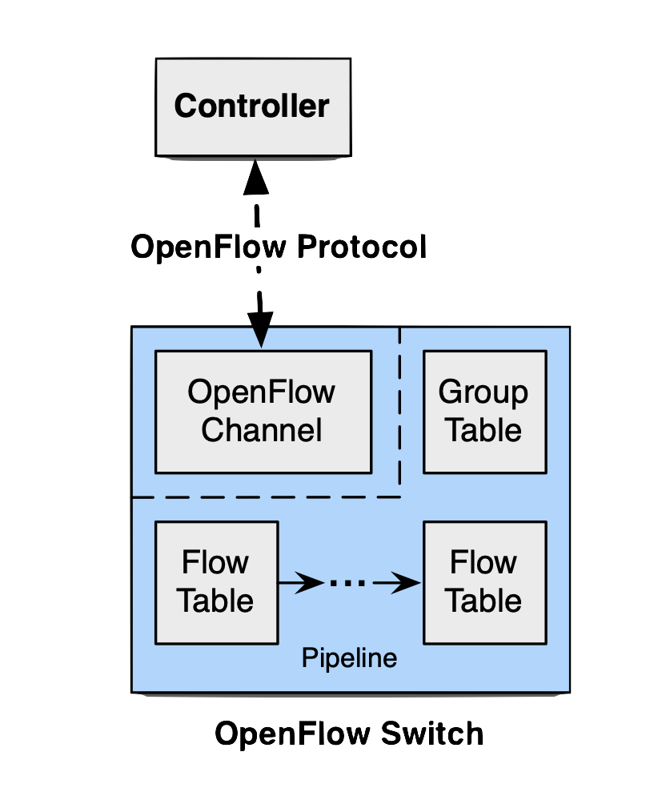

1. Introdução
1.1. Motivação
A evolução das redes de computadores exige novas abordagens para lidar com a complexidade e a necessidade de flexibilidade nas configurações, problemas estes que são característicos nos modelos tradicionais de roteamento feito por meio de hardware dedicado. O OpenFlow surge como uma resposta a essa demanda, permitindo o controle centralizado de fluxos e facilitando a automação da rede. Com o crescimento de tecnologias como a Internet das Coisas (IoT) e redes 5G, o papel de protocolos como OpenFlow se torna ainda mais relevante.
1.2. O que é OpenFlow?
OpenFlow é um protocolo de comunicação que permite que os switches de rede tomem decisões baseadas em instruções enviadas por um controlador central, permitindo que sejam implantadas políticas de rede, monitoramento e segurança com uma abordagem programável e ágil. Em resumo, o OpenFlow separa o plano de controle (onde as decisões de roteamento são feitas) do plano de dados (onde os pacotes são encaminhados), permitindo maior dinamismo e controle programável da rede.
1.3. Importância do OpenFlow
A introdução do OpenFlow revolucionou a forma como as redes são gerenciadas, permitindo que empresas e provedores de serviços configurem suas redes de maneira automatizada e dinâmica. Ele é um dos pilares das Redes Definidas por Software (SDN), que vêm transformando a infraestrutura de TI em diversos setores.
2. Histórico e Evolução das Redes Definidas por Software (SDN)
2.1. Origem e desenvolvimento
As Redes Definidas por Software (SDN) surgiram como uma solução para a crescente complexidade das redes tradicionais, que dependiam de hardwares proprietários e configurações manuais. O OpenFlow foi proposto em 2008 como um protocolo capaz de promover a separação entre o plano de controle e o plano de dados, permitindo maior flexibilidade no gerenciamento das redes. Com isso, redes programáveis puderam ser desenvolvidas, facilitando a adaptação a novos cenários e demandas tecnológicas.
2.2. Comparações com redes tradicionais
Diferentemente das redes tradicionais, onde cada switch é responsável por tomar decisões locais sobre o encaminhamento dos pacotes, o OpenFlow permite que um controlador central tome essas decisões e envie instruções para os switches. Isso reduz a necessidade de configurar manualmente cada dispositivo da rede, aumentando a eficiência e a capacidade de resposta. Além disso, enquanto redes tradicionais são difíceis de escalar e adaptar, as SDNs facilitam essas tarefas, tornando-as mais adequadas para cenários que exigem mudanças rápidas, como data centers e ambientes de nuvem.
3. Arquitetura do OpenFlow
3.1. Componentes do OpenFlow
3.1.1. Controlador SDN
 O controlador SDN é o cérebro da rede, responsável por enviar as regras de encaminhamento para os switches. Ele opera como uma camada de software que permite a programação e gestão centralizada dos fluxos de rede.
3.1.2. Canal Seguro
A comunicação entre o controlador e os switches é feita atráves do TCP. Portanto, a comunicação ocorre através de um canal seguro. Esse canal garante que as mensagens de controle sejam transmitidas de forma confidencial e íntegra, evitando a interceptação e modificação de comandos críticos.
3.1.3. Switches OpenFlow
Os switches OpenFlow são os dispositivos que executam as instruções enviadas pelo controlador. Eles contêm tabelas de fluxo que definem como os pacotes devem ser encaminhados ou descartados, de acordo com as regras previamente configuradas.
3.2. Fluxo de Dados
O fluxo de dados no OpenFlow é orientado por políticas definidas no controlador. Quando um pacote chega ao switch e não corresponde a nenhuma entrada na tabela de fluxo, o pacote é enviado para o controlador, que decide como tratá-lo. Isso garante uma gestão eficiente e controlada do tráfego, permitindo a adaptação dinâmica às condições da rede.
3.3. Tabela de Fluxo
A tabela de fluxo é um componente central na operação do OpenFlow, responsável por armazenar as regras e instruções de manipulação de pacotes que o switch deve seguir. Cada entrada na tabela de fluxo inclui três elementos principais:
Header
O cabeçalho (header) de cada entrada define os critérios de correspondência (matching) para o fluxo de pacotes. Ele inclui campos como o endereço IP de origem e destino, portas de origem e destino, tipo de protocolo, entre outros. Esses critérios são usados para identificar e classificar os pacotes que passam pelo switch, permitindo que ações específicas sejam aplicadas a eles.
Ações
As ações especificam o que o switch deve fazer com os pacotes correspondentes a um determinado fluxo. As ações mais comuns incluem encaminhar o pacote para uma porta específica, descartar o pacote ou modificar certos campos do cabeçalho antes de encaminhá-lo. As ações podem ser combinadas em grupos, permitindo maior flexibilidade na manipulação dos pacotes de acordo com as políticas definidas pelo controlador.
Contadores
Os contadores são usados para monitorar o tráfego associado a cada fluxo. Eles registram informações como o número de pacotes e bytes que passaram pelo switch para aquele fluxo específico, permitindo que o controlador monitore a rede em tempo real. Com base nesses contadores, o controlador pode identificar padrões de tráfego, detectar anomalias e ajustar as regras de fluxo conforme necessário para otimizar o desempenho da rede.
3.4. Mensagens
As mensagens são a principal forma de comunicação entre o controlador e os switches OpenFlow. Elas permitem que o controlador envie comandos e receba informações sobre o estado da rede. Existem três tipos principais de mensagens: simétricas, assíncronas e controller-to-switch.
Mensagens Simétricas
As mensagens simétricas são trocadas entre o controlador e os switches sem que uma solicitação específica seja feita. Um exemplo comum é a mensagem de "Hello", que é usada para estabelecer a comunicação inicial entre o controlador e o switch. Esse tipo de mensagem é essencial para garantir que o canal de comunicação esteja ativo e que o controlador e o switch possam trocar informações de forma contínua.
Mensagens Assíncronas
As mensagens assíncronas são enviadas pelos switches ao controlador, geralmente para notificar eventos importantes na rede. Esses eventos incluem a chegada de um novo fluxo que não possui uma regra na tabela de fluxo (evento "Packet-In"), a remoção de um fluxo (evento "Flow-Removed"), ou mudanças no estado da porta do switch (evento "Port-Status"). Essas mensagens permitem que o controlador responda a eventos em tempo real, ajustando as regras de fluxo e as políticas de rede de acordo com as mudanças no ambiente.
Mensagens Controller-to-Switch
As mensagens do tipo "controller-to-switch" são enviadas diretamente pelo controlador ao switch, solicitando ou alterando o estado de uma tabela de fluxo ou de uma porta específica. Dessa forma, temos, principalmente, as mensagens que alteram uma configuração ou são alguma feature.
Por exemplo, o controlador pode usar uma mensagem "Flow-Mod" para adicionar, modificar ou remover uma entrada na tabela de fluxo do switch. Outro exemplo é a mensagem "Packet-Out", que permite ao controlador instruir o switch a encaminhar um pacote específico por uma porta de saída.
Por fim, podemos pensar no exemplo de mensagens que configuram o estado das tabelas de fluxo, as quais podem ser numeradas de 0 até n. Essas mensagens são fundamentais para o funcionamento do OpenFlow, pois permitem que o controlador tenha controle direto sobre o comportamento dos switches na rede.
4. Especificações Técnicas do OpenFlow
4.1. Especificações do Switch
Os switches OpenFlow são projetados para executar regras precisas definidas pelo controlador SDN. Cada switch contém uma ou mais tabelas de fluxo, onde estão armazenadas as instruções para manipulação de pacotes. A especificação do switch define como essas tabelas devem ser organizadas, como os pacotes são correspondidos e como as ações são aplicadas, de acordo com o controle centralizado fornecido pelo controlador.
Os switches operam em conjunto com o controlador, mas de forma a minimizar o tráfego de controle: uma vez que uma regra de fluxo é aplicada, os switches podem processar pacotes de maneira independente, sem precisar encaminhar cada pacote ao controlador. Essa abordagem permite uma operação eficiente e escalável, onde o controlador apenas intervém quando novas regras precisam ser aplicadas ou atualizadas.
Componentes das Especificações do Switch
As especificações do switch OpenFlow incluem três componentes principais:
- Tabela de Fluxo: Onde estão as regras de encaminhamento e manipulação dos pacotes. Cada entrada da tabela de fluxo possui critérios de correspondência, ações a serem tomadas e contadores para monitoramento.
- Canais de Comunicação: O switch OpenFlow usa canais de comunicação seguros para receber instruções do controlador e enviar informações de estado. Esses canais garantem a integridade dos comandos de rede e a confidencialidade dos dados transmitidos.
- Portas de Entrada e Saída: As portas do switch são os pontos de entrada e saída de pacotes, essenciais para o direcionamento e roteamento do tráfego conforme as instruções do controlador.
4.2. Versões do OpenFlow e Suas Funcionalidades
O OpenFlow passou por diversas atualizações, cada versão introduzindo recursos e capacidades para responder às novas demandas das redes. Essas versões incluem melhorias na escalabilidade, flexibilidade de controle e capacidades de roteamento de pacotes. Abaixo estão algumas das principais versões e suas contribuições:
OpenFlow 1.0
A primeira versão formal do OpenFlow foi lançada em 2008. A versão 1.0 introduziu a arquitetura de controle centralizado, com uma única tabela de fluxo por switch. Ela permitia que o controlador definisse diretamente as regras de encaminhamento para cada fluxo, proporcionando uma base para as Redes Definidas por Software (SDN). No entanto, as funcionalidades eram básicas, com capacidade limitada de ações e critérios de correspondência.
OpenFlow 1.1
A versão 1.1 trouxe a introdução de múltiplas tabelas de fluxo e grupos de ações, permitindo que um switch executasse várias operações em sequência para um mesmo pacote. Isso aumentou a flexibilidade e permitiu uma maior eficiência no processamento de pacotes, além de simplificar o gerenciamento de tráfego mais complexo.
OpenFlow 1.3
Esta versão ampliou as capacidades de correspondência de campos, permitindo regras de fluxo mais detalhadas e ações avançadas. Também introduziu a possibilidade de medição de qualidade de serviço (QoS), facilitando o controle de largura de banda e priorização de tráfego. OpenFlow 1.3 foi uma versão amplamente adotada, pois ofereceu maior flexibilidade para aplicações de controle de tráfego.
OpenFlow 1.5.1
A versão 1.5.1 introduziu melhorias significativas em relação ao controle de grupos e múltiplas tabelas, além de recursos adicionais para operações assíncronas. Uma das funcionalidades de destaque foi o suporte a tabelas de metadados, que permitiram uma manipulação mais sofisticada dos pacotes e possibilitaram um controle mais dinâmico das políticas de rede.
4.3. Capacidade de Correspondência e Manipulação de Pacotes
O OpenFlow permite a correspondência de pacotes com base em uma variedade de campos, incluindo endereços de IP, portas de origem e destino, e identificadores de protocolo. Essas capacidades de correspondência podem ser configuradas de forma precisa para identificar fluxos específicos de dados. Ao combinar diferentes critérios, o OpenFlow possibilita uma segmentação de tráfego detalhada, fundamental para garantir que políticas de segurança, controle de acesso e qualidade de serviço sejam aplicadas conforme necessário.
A manipulação dos pacotes, por sua vez, inclui ações como encaminhar o pacote a uma porta específica, modificar seu cabeçalho (como reescrever o endereço de origem ou destino), aplicar etiquetas (tags) para identificar o tipo de tráfego ou descartar o pacote. Esses recursos tornam o OpenFlow extremamente versátil, permitindo implementar desde políticas simples de roteamento até configurações avançadas de redes corporativas e data centers.
4.4. Resiliência e Monitoramento
A especificação do OpenFlow também considera a resiliência da rede. Em caso de falhas no controlador ou em comunicações entre o controlador e os switches, as tabelas de fluxo armazenadas localmente permitem que o switch continue a operar com as regras existentes até que a comunicação seja restabelecida. Essa capacidade de operação independente é essencial para garantir a continuidade dos serviços em redes críticas.
O OpenFlow também inclui recursos robustos de monitoramento, como o uso de contadores e métricas de tráfego para cada entrada na tabela de fluxo. Esses contadores registram informações como o número de pacotes e bytes processados, além do tempo em que cada fluxo foi ativo. O controlador pode consultar esses dados periodicamente para avaliar a performance e identificar padrões de tráfego, otimizando o funcionamento da rede.
5. Controladores OpenFlow
5.1. Principais Controladores SDN Compatíveis com OpenFlow
Existem diversos controladores SDN compatíveis com o protocolo OpenFlow, cada um com suas características e áreas de aplicação específicas. Esses controladores desempenham o papel crucial de gerenciar a comunicação entre o plano de controle e o plano de dados, permitindo que os switches OpenFlow operem conforme as políticas definidas. Dentre os mais populares estão:
- NOX: Um dos primeiros controladores SDN, desenvolvido como uma prova de conceito para Redes Definidas por Software e OpenFlow. O NOX foi projetado para ser robusto e rápido, com suporte a processamento de eventos em tempo real, o que o torna eficiente para aplicações de monitoramento e controle básico em redes de menor escala.
- POX: Derivado do NOX, o POX é um controlador SDN escrito em Python, o que facilita seu uso e entendimento para experimentos acadêmicos e desenvolvimento de protótipos. Ele é amplamente utilizado em ambientes educacionais e de pesquisa, permitindo uma implementação mais acessível de controladores SDN e integração de novos serviços de rede.
- ONOS (Open Network Operating System): Focado em escalabilidade e alta disponibilidade, o ONOS é amplamente utilizado em redes de telecomunicações e grandes data centers. Ele permite a operação de redes distribuídas e oferece suporte a recursos avançados, como recuperação rápida de falhas e controle distribuído de rede, o que o torna adequado para redes que exigem alta confiabilidade.
- OpenDaylight: Uma plataforma modular e de código aberto, compatível com uma ampla gama de protocolos além do OpenFlow. O OpenDaylight é popular em ambientes corporativos e de pesquisa devido à sua flexibilidade e capacidade de integração com várias ferramentas de monitoramento e automação. Ele permite que os desenvolvedores expandam sua funcionalidade com plugins, suportando implementações em redes complexas e heterogêneas.
- Ryu SDN Framework: Um controlador escrito em Python, projetado para ser simples e flexível. O Ryu é amplamente utilizado em implementações menores e em experimentos acadêmicos, por ser fácil de configurar e personalizar. Ele permite que pesquisadores e desenvolvedores testem novas políticas e funcionalidades de maneira rápida, sem a complexidade de controladores mais robustos.
5.2. Comparativo entre Controladores
Cada controlador tem suas vantagens específicas e atende a diferentes necessidades de rede. O NOX, por exemplo, é adequado para redes menores que priorizam simplicidade e velocidade de resposta, enquanto o POX é amplamente utilizado em ambientes educacionais pela sua facilidade de uso e pela possibilidade de desenvolvimento de protótipos em Python. Já o ONOS é ideal para redes de larga escala e telecomunicações, onde a alta disponibilidade e a capacidade de recuperação são essenciais.
O OpenDaylight destaca-se pela flexibilidade, com suporte a múltiplos protocolos e integração com diversos serviços e plataformas, sendo indicado para empresas e provedores de serviços que demandam uma solução modular e expansível. Por fim, o Ryu é muito utilizado em ambientes de pesquisa acadêmica, dada sua simplicidade de implementação e sua adaptabilidade, tornando-o ideal para testes experimentais e desenvolvimento de novas funcionalidades.
5.3. Desempenho e Flexibilidade
A escolha do controlador pode influenciar diretamente o desempenho e a flexibilidade da rede. O ONOS é projetado para oferecer escalabilidade e recuperação de falhas em redes distribuídas, tornando-o adequado para redes de telecomunicações e data centers. Já o OpenDaylight permite a integração com diversas ferramentas de automação e monitoramento, sendo uma opção versátil para ambientes corporativos.
O Ryu destaca-se pela sua simplicidade e fácil adaptabilidade, o que facilita a criação de novas funcionalidades e políticas de rede. Por outro lado, o NOX e o POX são controladores eficientes para redes menores ou testes, oferecendo um desempenho satisfatório para aplicações que não exigem alta complexidade.
6. Casos de Uso
6.1. Virtualização de Redes
O OpenFlow desempenha um papel essencial na virtualização de redes, permitindo a criação de redes virtuais sobre uma infraestrutura física compartilhada. Isso é especialmente útil em ambientes de data centers e provedores de nuvem, onde várias redes isoladas precisam coexistir. O OpenFlow facilita a gestão dinâmica desses ambientes, oferecendo maior controle sobre o tráfego.
6.2. Balanceamento de Carga
Em ambientes que exigem alta disponibilidade e distribuição eficiente de recursos, como data centers e servidores web, o OpenFlow permite a implementação de políticas avançadas de balanceamento de carga. O controlador SDN pode monitorar a carga de cada nó na rede e redirecionar o tráfego em tempo real, otimizando o desempenho e minimizando a latência.
6.3. Contextos para Aplicação
O OpenFlow é amplamente utilizado em vários cenários, incluindo redes de provedores de internet (ISP), redes de campus universitários e ambientes de pesquisa. Também é essencial na implementação de redes para a Internet das Coisas (IoT), onde uma grande quantidade de dispositivos precisa ser gerenciada de forma eficiente e segura.
7. Vantagens e Desafios
7.1. Segurança em Ambientes OpenFlow
O OpenFlow centraliza o controle de rede, o que simplifica a aplicação de políticas de segurança, permitindo que administradores configurem e monitorem fluxos de rede a partir de um ponto único. No entanto, essa centralização também representa um ponto de vulnerabilidade: caso o controlador SDN seja comprometido, o impacto pode afetar a rede inteira. Isso faz do controlador um alvo para ataques que buscam desestabilizar o sistema.
Além disso, a comunicação entre o controlador e os switches ocorre por um canal que precisa ser seguro para evitar ataques de interceptação e injeção de pacotes. A utilização de protocolos seguros e criptografados para essa comunicação é essencial para garantir a integridade e confidencialidade dos dados que trafegam entre esses componentes. A aplicação de firewalls dedicados e sistemas de detecção de intrusões (IDS) pode fortalecer ainda mais a segurança no ambiente OpenFlow.
7.2. Desafios da Implementação
Implementar uma rede baseada em OpenFlow apresenta desafios, especialmente quando a rede deve coexistir com infraestruturas legado. Em empresas com redes já estabelecidas, uma transição completa para uma rede SDN pode ser impraticável e arriscada. Portanto, é comum que a migração ocorra gradualmente, com a introdução de novos elementos OpenFlow coexistindo com os sistemas antigos.
Essa migração gradual exige um planejamento cuidadoso para garantir que as novas integrações não gerem interrupções. Além disso, há a complexidade adicional de garantir que todos os dispositivos, novos e antigos, se comuniquem corretamente e mantenham o desempenho desejado. A interoperabilidade entre dispositivos legados e compatíveis com SDN é fundamental para uma transição bem-sucedida, mas pode ser um grande obstáculo dependendo dos equipamentos envolvidos.
7.3. Escalabilidade e Performance
Apesar da flexibilidade do OpenFlow, escalá-lo para redes maiores é um desafio devido à carga que o controlador SDN precisa gerenciar. À medida que o número de dispositivos e fluxos na rede aumenta, o controlador pode se tornar um ponto de gargalo, limitando o desempenho geral da rede.
Uma solução para esse problema é distribuir a carga entre múltiplos controladores, especialmente em redes de grande escala, como data centers ou infraestruturas de provedores de serviços. Outra abordagem envolve o uso de tabelas de fluxo distribuídas nos switches, reduzindo a necessidade de consultas constantes ao controlador. Essas técnicas permitem que a rede mantenha o desempenho e a escalabilidade desejados, apesar do aumento no número de dispositivos.
7.4. Benefícios do Uso de OpenFlow
O OpenFlow oferece grandes benefícios na automação e programação de redes. A possibilidade de definir políticas e configurações de forma centralizada permite responder rapidamente a mudanças nas demandas de tráfego e adaptar a rede para novos serviços sem a necessidade de intervenção manual.
Esse nível de automação aumenta a agilidade da infraestrutura e reduz o tempo de resposta para atender a novas necessidades, como a introdução de novos usuários ou a reconfiguração da rede para suportar aplicações de alta demanda. Além disso, a flexibilidade do OpenFlow permite que as redes sejam otimizadas para diferentes tipos de tráfego, priorizando, por exemplo, aplicativos de vídeo em tempo real ou serviços críticos para o negócio.
8. OpenFlow Atualmente
8.1. O Papel do OpenFlow no 5G
Com a chegada do 5G, a demanda por redes mais dinâmicas e responsivas aumentou significativamente. As redes 5G não apenas conectam mais dispositivos, mas também exigem uma resposta quase imediata a variações de carga e priorização de dados. O OpenFlow facilita essa flexibilidade, permitindo a configuração automatizada de fluxos de rede para gerenciar o tráfego de forma otimizada.
Na prática, o OpenFlow permite que as operadoras de telecomunicações definam políticas para priorizar determinados tipos de dados, como aplicativos de realidade aumentada, transmissões ao vivo e dispositivos IoT industriais. Essas aplicações são extremamente sensíveis a atrasos e interrupções, e o OpenFlow permite que o controlador adapte o roteamento do tráfego em tempo real, de acordo com as condições da rede. Dessa forma, ele cumpre um papel essencial para garantir que as redes 5G sejam capazes de atender a esses requisitos rigorosos de latência e qualidade de serviço.
8.2. Expansão para Novas Áreas
Além do 5G, o OpenFlow está expandindo seu alcance para áreas como Edge Computing e SD-WAN. No contexto do Edge Computing, onde o processamento de dados é feito próximo ao usuário final, o OpenFlow permite um controle mais preciso do tráfego de rede. Isso é especialmente relevante para aplicações que exigem baixa latência, como monitoramento em tempo real e controle de máquinas industriais.
Em redes SD-WAN, o OpenFlow oferece uma maneira de gerenciar conexões de longa distância entre escritórios e data centers. Ele permite que políticas de priorização de tráfego sejam aplicadas dinamicamente, assegurando que dados críticos tenham uma rota otimizada para seu destino. Outro ponto relevante é a integração com a virtualização de funções de rede (NFV), onde funções como firewalls e balanceamento de carga são virtualizadas e gerenciadas pelo controlador OpenFlow. Isso proporciona uma infraestrutura de rede mais ágil, flexível e capaz de se adaptar rapidamente às mudanças de demanda.
9. Conclusão
9.1. Impactos do OpenFlow no Futuro
O OpenFlow é fundamental para a transformação digital das redes, trazendo a flexibilidade e a automação necessárias para atender às demandas atuais e futuras. Ao permitir que redes sejam programáveis e adaptáveis, ele facilita a criação de infraestruturas mais ágeis e alinhadas com as necessidades de negócios que dependem de alta conectividade e resposta rápida.
O OpenFlow também representa um avanço em termos de gerenciamento de redes distribuídas e complexas, com aplicações que vão desde data centers até redes de telecomunicações de larga escala. Espera-se que ele continue sendo adotado e aprimorado, especialmente à medida que empresas e provedores de serviço integrem suas redes para suportar tecnologias emergentes, como IA e automação avançada.
9.2. Perspectivas de Estudos Futuros
O desenvolvimento contínuo do OpenFlow abre portas para novas áreas de pesquisa. Entre as inovações estão o uso do OpenFlow em redes de próxima geração, como o 6G, que exigirão ainda mais capacidade de automação e inteligência para gerenciar fluxos de dados. A integração com IA também é uma área promissora: com IA aplicada, o OpenFlow pode permitir redes que aprendem e se adaptam em tempo real, antecipando problemas e ajustando-se para prevenir falhas.
Outras áreas de estudo incluem o uso do OpenFlow em redes quânticas e o desenvolvimento de novas técnicas para aprimorar a segurança e a escalabilidade do protocolo. A segurança continua sendo um aspecto crucial, especialmente à medida que as redes se tornam mais complexas e críticas. Essas perspectivas fazem do OpenFlow uma tecnologia com grande potencial para moldar o futuro das redes de forma ainda mais inteligente e autônoma.
10. Referências Bibliográficas
- McKeown, N., Anderson, T., Balakrishnan, H., et al. (2008). OpenFlow: Enabling Innovation in Campus Networks. ACM SIGCOMM Computer Communication Review, 38(2), 69-74. doi:10.1145/1355734.1355746
- Kreutz, D., Ramos, F. M. V., Verissimo, P. E., et al. (2015). Software-Defined Networking: A Comprehensive Survey. Proceedings of the IEEE, 103(1), 14-76. doi:10.1109/JPROC.2014.2371999
- Feamster, N., Rexford, J., & Zegura, E. (2014). The Road to SDN: An Intellectual History of Programmable Networks. ACM SIGCOMM Computer Communication Review, 44(2), 87-98. doi:10.1145/2602204.2602219
- Berde, P., Gerola, M., Hart, J., et al. (2014). ONOS: Towards an Open, Distributed SDN OS. Proceedings of the Third Workshop on Hot Topics in Software Defined Networking (HotSDN), 1-6. doi:10.1145/2620728.2620744
- Nadeau, T., & Gray, K. (2013). SDN: Software Defined Networks. O'Reilly Media. ISBN: 978-1-4493-4230-2
- Dixit, A., Hao, F., Mukherjee, S., et al. (2013). Towards an Elastic Distributed SDN Controller. ACM SIGCOMM Computer Communication Review, 43(4), 7-12. doi:10.1145/2486001.2486003
- Open Networking Foundation (ONF). (2021). OpenFlow Switch Specification Version 1.5.1. Retrieved from https://opennetworking.org
- Mingxin, Z., Zongpeng, L., & Jianping, W. (2017). A Survey on SDN Controllers and its Applications in Big Data Environment. Journal of Network and Computer Applications, 97, 33-42. doi:10.1016/j.jnca.2017.08.015
- Benamrane, Y., Hasan, M. A., & Shah, N. (2021). A Comprehensive Survey on OpenFlow Protocol and Its Use Cases. Journal of Network and Computer Applications, 172, 102823. doi:10.1016/j.jnca.2020.102823
- Farhady, H., Lee, H., & Nakao, A. (2015). Software-Defined Networking: A Survey. Computer Networks, 81, 79-95. doi:10.1016/j.comnet.2015.02.014